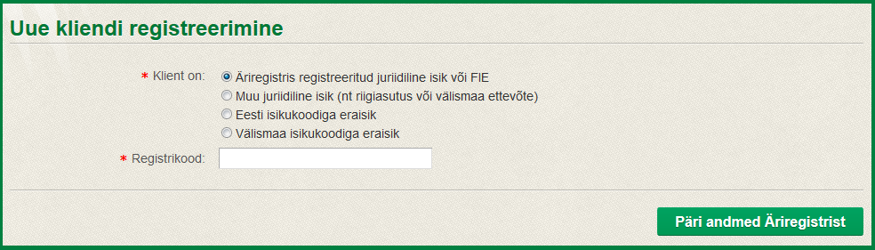

Kasutusjuhend
Ametniku kasutusjuhend
Teenuste haldus
Teenuste seadistamiseks klikkige menüüpunktil "Teenused".
Avaneb teenuste nimekiri, mis annab ülevaate kõikidest Kliendiportaali teenustest, sh kehtetutest teenustest. Teenuste halduse kaudu saate minna seadistama erinevaid teenuseid või lisama uut teenust. Uut teenust saab lisada vaid lihtdokumendina, selleks klikkige nimekirja kohal linki "Lisa uus teenus".
Juhul kui olete ametniku õigustes, kuvatakse ainult Teie asutusega seotud teenused, mida on võimalik minna ka seadistama. Asutuse filtrit muutes saate vaadata ka teiste asutuste teenuseid, kuid näete ainult teenuste eelvaateid (st ei saa seadistada teiste asutuste teenuseid).
Juhul kui Teile on antud teenuste halduse administraatori õigused, saate vaadata, lisada ja seadistada kõikide asutuste teenuseid.
Teenuse seadistamise detailkuva
Teenuste halduse nimekirjas sobivale teenusele klikkides või uut teenust lisades avaneb teenuse seadistamise detailkuva.
Teenuse liik - eristatakse 2 tüüpi teenuseid:
- Lihtdokumendid - lihtdokument on e-teenus, mida ametnik saab portaalis ise luua. Teenus tähendab dokumendi malli (nt .doc formaadis) üleslaadimist, mille klient laadib alla, täidab ära ja laeb uuesti üles. Lihtdokumendid luuakse harva kasutatavate ja/või tihti muutuvate teenuste korral, mille puhul vormdokumentide arendus poleks mõistlik. Kliendi poolt esitatud lihtdokumendi andmed kantakse menetlussüsteemi käsitsi.
- Vormdokumendid - vormdokument on kliendiportaali täisfunktsionaalne e-teenus. Iga vormdokument tuleb kliendiportaalis eraldi arendada. Vormdokumendil olevad andmed edastatakse menetlussüsteemi automaatselt vastava liidese kaudu.
Portaali kaudu saab lisada ainult lihtdokumente. Võimalik on seadistada aga ka vormdokumente.
Teenuseid ei ole võimalik kustutada. Selleks, et klientidele teenust enam ei kuvataks, tuleb teenusel määrata "Kehtiv kuni" väärtus.
Lisavalikud
Nii liht- kui vormdokumentide puhul on võimalik teha järgnevad valikud:
- On asutuse teenuste koondvaates - määrab, kas teenus kuvatakse kliendile teenuste koondvaate esilehel (kus teenused on jaotatud asutuste kaupa). Esilehel kuvatakse korraga maksimaalselt 6 selle valikuga teenust. Kui valik on tehtud rohkem kui 6 teenusele, võetakse iga kord 6 teenust suvaliselt.
- On valdkonna teenuste koondvaates - määrab, kas teenust kuvatakse kliendile teenuste koondvaate esilehel (kus teenused on jaotatud valdkondade kaupa). Esilehel kuvatakse korraga maksimaalselt 6 selle valikuga teenust. Kui valik on tehtud rohkem kui 6 teenusele, võetakse iga kord 6 teenust suvaliselt.
- Taotlusele võib kaasa panna lisadokumente - määrab, kas klientidel on võimalus põhidokumendiga kaasa panna lisadokumente. Valiku tegemisel lisandub teenuse seadistamise juurde tekstiväli "Tekst lisadokumentide juurde", kus tuleks kirjeldada, milliseid lisadokumente peaks klient esitama.
- Taotlusel tuleb valida maakonnakeskus, kuhu dokument saadetakse - määrab, kas klient peab dokumenti esitades valima maakonnakeskuse, kuhu dokument esitatakse. NB! Vormdokumentide korral peab olema vormdokumendis arendajate poolt määratud koht, kus maakonnakeskuse valik kuvatakse. Vastasel juhul antud valik ei rakendu.
- Abiinfo on taotlusel vaikimisi avatud - määrab, kas abiinfo on avatud, kui klient teenust täitma läheb. Vaikimisi ei näidata abiinfot kliendile enne, kui ta on abiinfo lingile vajutanud. Antud valiku võiksite teha vaid juhul, kui abiinfo tekst on lühike.
- Klient saab esitada muutmise dokumendi - määrab, kas kliendil on võimalus pärast dokumendi esitamist esitada muutmise dokument.
- Klient saab esitada loobumise dokumendi - määrab, kas kliendil on võimalus pärast dokumendi esitamist esitada dokument, et dokumendist loobuda.
- Klient saab lisada teateid - määrab, kas kliendil on võimalus pärast dokumendi esitamist edastada dokumendiga seotud teateid.
- Klient saab tasuda riigilõivu - määrab, kas klient saab pärast dokumendi esitamist tasuda pangalinkidega riigilõivu eest. Antud valik tehke juhul, kui teenuse eest tuleb tasuda riigilõivu. Valiku tegemisel tuleb lisaks seadistada riigilõivud (vt alamjaotust "Riigilõivude seadistamine").
Pärast valikute tegemist salvestage andmed. Alles seejärel ilmuvad valikutest sõltuvad alamjaotused (nt tekst lisadokumentide juurde ja riigilõivud).
Tekst dokumendi mallide juurde
Antud alamjaotus kuvatakse ainult lihtdokumentide korral. Sisestage tekst, mis kuvatakse kliendile lihtdokumendi täitmisel. Välja tuleb mõelda alamjaotuse pealkiri ja selle all kuvatav tekst (kirjeldada, milleks ja kuidas dokumendi malli kasutatakse, mida peab taotleja tegema) ning üles laadida vähemat 1 kehtiv dokumendi mall (nt .doc formaadis). Dokumendi malle saab kustutada ainult juhul, kui see hakkab kehtima tulevikus. Kui dokumendi mall muutub, lisage uus mall ning määrake eelnevalt kehtinud mallile kehtivuse lõppkuupäev. Kliendile ei kuvata dokumendi malle, mille kehtivuse lõpp on möödas.
Tekst lisadokumentide juurde
Antud alamjaotus tekib juhul, kui on tehtud valik "Taotlusele võib kaasa panna lisadokumente". Kirjeldage, milliseid lisadokumente peab klient esitama. Kasutage teksti vormindamisel bulleteid või nummerdamist.
Abiinfo tekst
Täitke abiinfo tekst juhul, kui soovite, et kliendil oleks võimalus lugeda täiendavat infot vastava teenuse või teenuse täitmise kohta. Abiinfona võib lisada ka lingi asutuse kodulehel olevale artiklile või failile. Võib lisada infot riigilõivu tasumise kohta (nt "Pärast taotluse esitamist on portaalis võimalik tasuda pangalinkide kaudu riigilõiv").
Juhul kui abiinfo teksti on palju, loobuge valikust "Abiinfo on taotlusel vaikimisi avatud".
Riigilõivude seadistamine
Antud alamjaotus kuvatakse juhul, kui on tehtud valik "Klient saab tasuda riigilõivu".
Esmalt peate teadma, mis tüüpi riigilõiv tuleks teenusele seadistada. Võib eristada 2 tüüpi riigilõive:
- Fikseeritud - teenusele tuleb seadistada 1 konkreetne riigilõivu summa, mis ei sõltu taotlusele sisestatud andmetest. Võimalik seadistada ka lihtdokumendile. Näiteks on alati teada, et teenuse eest tuleb tasuda riigilõiv 20 eurot. Fikseeritud riigilõivu saate seadistada suvalisele teenusele, ilma, et see nõuaks Kliendiportaali arendaja sekkumist.
- Arvutatav - riigilõivu summa sõltub taotlusele sisestatud andmetest. Näiteks kui taotlusele on sisestatud kogus=10, tuleb maksta riigilõivu 15 eurot, kuid koguse 100 korral tuleb tasuda 90 eurot. Arvutatava riigilõivu seadistamiseks peab sekkuma ka arendaja, kuna vajalik on määrata, milliste taotluse andmete põhjal riigilõiv arvutatakse. Lihtdokumendile ei saa seadistada, kuna lihtdokumendil olevaid andmeid ei saa süsteem arvutamiseks kasutada.
Fikseeritud riigilõivu lisamiseks:
- Klikkige nimekirja "Riigilõiv" kohal linki "Lisa uus".
- Sisestage makse selgitus, viitenumber, riigilõivu summa ja kuupäev, millest alates vastav riigilõiv hakkab kehtima.
- Vajutage "Salvesta"
Fikseeritud riigilõivu muutmiseks:
Juhul kui fikseeritud riigilõivu määr muutub:
- Määrake hetkel kehtivale riigilõivule kehtivuse lõppkuupäev (ehk viimane kuupäev, mil vastav riigilõivu määr veel kehtib. Võib olla tulevikus).
- Lisage uus riigilõivu määr. Selleks:
- Võite kasutada nimekirja kohal olevat "Lisa uus" linki. Sellisel juhul tuleb kõik andmed uuesti sisestada.
- Võite nimekirjast valida olemasoleva riigilõivu ja klikkida lingil "Kopeeri". Sellisel juhul on andmed eeltäidetud eelneva riigilõivu andmetega. Tehke vajalikud muudatused ja salvestage.
Arvutatava riigilõivu lisamiseks:
Arvutatavat riigilõivu saab lisada ainult vormdokumendile (mitte lihtdokumendile). Arvutatava riigilõivu esialgsed seadistused teeb Kliendiportaali arendaja uue vormdokumendi arendamisel.
Arvutatava riigilõivu muutmiseks:
Juhul kui süsteemis olevad riigilõivu määrade kehtivuse algus on tulevikus, võite valida nimekirjast olemasoleva riigilõivu ja minna seda seadistama. Kui aga vastavad riigilõivu määrad juba kehtivad ning teatud kuupäevast määrad muutuvad, tuleks:
- Määrake hetkel kehtivale riigilõivule kehtivuse lõppkuupäev (ehk viimane kuupäev, mil vastav riigilõivu määr veel kehtib. Võib olla tulevikus).
- Valige nimekirjast olemasolev riigilõiv ja klikkige lingil
"Kopeeri". Sellisel juhul on andmed eeltäidetud eelneva riigilõivu
andmetega. Määrake kehtivuse algus (võiks olla tulevikus). Tehke
vajalikud muudatused tabelis "Riigilõivu määrad" ja
salvestage.
- Nimekirja "Riigilõiv" kohal olevat linki "Lisa uus" saab kasutada ainult juhul, kui arvutatav riigilõiv muutub fikseeritud riigilõivuks.
- Klikkige tabeli "Riigilõivu määrad" kohal olevat linki "Kontrolli seadistust". Sisestage kogused ja veenduge, kas süsteem arvutas riigilõivu summad õigesti. Kahtluste korral teavitage Kliendiportaali haldurit.
Kliendid
Kliendi otsing
Võimaldab otsida ja vaadata Põllumajandusministeeriumi kliendibaasis olevate klientide andmeid. Teatud juhtudel on võimalik klientide andmeid ka muuta (vt Uue kliendi registreerimine ja kliendi andmete muutmine).
Uue kliendi registreerimine ja kliendi andmete muutmine

Uue kliendi registreerimisel tuleb valida kliendi tüüp. Sellest sõltub, kas tuleb sisestada ainult kliendi isikukood/registrikood või on vaja sisestada kõik kliendi isikuandmed: nimelt, kui on tegemist Äriregistris registreeritud juriidilise isikuga või Eesti isikukoodiga eraisikuga, siis peab sisestama ainult registrikoodi/isikukoodi ning selle järgi pärib süsteem isikuandmed automaatselt Äriregistrist või Rahvastikuregistrist. Pärast uue kliendi salvestamist suunatakse kliendi andmete kuvale, kus saab sisestada kliendi kontaktandmed ning vajadusel ka volitatud esindajad. NB! Volitatud esindajad on vaja sisestada juhul, kui tegemist on juriidilise isikuga, kes pole Äriregistris registreeritud. Sel juhul ei saa portaal automaatselt teada ettevõtte/asutuse esindajaid, vaid need tuleb sisestada käsitsi. Vt ka Volitused.
Kliendi andmed
Põhiandmed
Isikuandmed
Kliendi isikuandmeid saab muuta, kui tegemist ei ole Äriregistris või Rahvastikuregistris registreeritud isikuga. Äriregistris ja Rahvastikuregistris registreeritud isikute andmeid uuendatakse registritest automaatselt. Kõikide klientide puhul on võimalik vaadata isikuandmete ajalugu ja muuta kliendistaatust. Isikuandmete ajalugu kuvab kõik muudatused, mis on tehtud kliendi isikuandmetega.
Kliendikategooriad
Võimalik on määrata, mis asutuste ja valdkondade kliendiga on tegemist. Vastavaid andmeid kogutakse automaatselt ka vormdokumentidelt (nt kui klient kasutab mõnd Taimetervise valdkonna teenust, siis määratakse ta automaatselt ka Taimetervise valdkonna kliendiks).
Lisaks on kliendikategooria "Muud kategooriad", mis võimaldab kliente kategoriseerida muudel alustel. "Muud kategooriad" valiku saavad ministeeriumi allasutused kujundada vastavalt oma soovidele, selleks peab portaali administraator lisama soovitud valikud loendisse KLIENDIKATEGOORIA, seejärel saab neid kliendi andmete kuval valida.
Kontaktandmed (aadress, telefon, e-mail)
Tegevuskohad
Kui tegemist on juriidilise isikuga (ettevõttega), siis on võimalik lisada ettevõtte tegevuskohad ja nende kontaktandmed.
Tegevuskoha kustutamiseks on tegevuskoha andmete kuva allosas nupp „Kustuta“.
Volitused
Kuvatakse kliendi esindajad. Volitamine tähendab, et volitatu saab portaalis kliendi täieõiguslikuks esindajaks, s.t. näeb kõiki andmeid ja saab teha kõiki toiminguid, mida klient ise.
Kes keda saab volitada
Volitada saab ainult eraisikuid.
Kui klient on eraisik, siis saab volitusi jagada ainult tema ise. Volitatud esindajad volitusi edasi jagada ei saa.
Kui klient on juriidiline isik, siis saavad volitusi jagada esindajad, kellel on Äriregistris vastava juriidilise isiku ainuesindusõigus. Juhul kui juriidiline isik pole Äriregistris registreeritud (nt riigiasutused), siis portaali administraator või ametnik lisab kliendile analoogse esindaja, kellel on õigus volitusi edasi jagada. Volitamisõigusega esindajad üksteise volitusi muuta ei saa, neid reguleerib ainult Äriregister (või kui klient pole Äriregistris, siis portaali administraator/ametnik). Kui juriidilise isiku esindaja volitab portaalis kedagi (nt firma juht volitab mõnd töötajat portaalis firma nimel tegutsema), siis niimoodi volitatused saanud isik ise kedagi omakorda edasi volitada ei saa.
Äriregistris olev juriidilise isiku ainuesindusõigusega esindaja salvestatakse automaatselt portaalis vastava juriidilise isiku volituste nimekirja siis, kui ta selle juriidilise isiku nimel kliendiportaali siseneb. S.t. juriidilise isiku Äriregistri esindajate eelnev käsitsi sisestamine kliendiportaalis ei ole võimalik ega ka vajalik.
Volitamine
NB! Ametnik/administraator saab volitusi teha (s.t. esindajaid lisada) vaid kliendile, kes on juriidiline isik, kuid pole Äriregistris registreeritud (nt riigiasutused). Siis portaali administraator või ametnik lisab kliendile esindaja, kellel on õigus volitusi edasi jagada.
Volitusele saate määrata kehtivuse vahemiku. Lõppkuupäeva võib jätta määramata, siis kehtib volitus tähtajatult. Volituse lõpetamiseks peate portaalis avama sama volituse uuesti ning määrama lõppkuupäeva. Volituse kehtivuse vahemikku saab alati muuta.
Volitusele tuleb sisestada ka volitatava isiku e-maili aadress, sinna saadetakse volitatule teade selle kohta, et teda on Põllumajandusministeeriumi Kliendiportaalis volitatud vastava kliendi esindajaks.
Volituse kinnitamiseks tuleb volitus digiallkirjastada ID-kaardiga või mobiil-ID’ga.
Teated
Saabunud teated
Saabunud teadete nimekirjas näete klientide poolt Teie asutusele edastatud teateid. Eristatavad on teated, mida keegi pole veel lugenud. Saabunud teate peale vajutades saate teatele vastata, misjärel kuvatakse vastaja nimi ja kuupäev ka nimekirjas.
Saadetud teated
Kuvatakse Teie asutuse poolt edastatud teated, sh massteated. Saadetud teate peale vajutades kuvatakse teate info ja võimaldatakse samale sihtgrupile uus teade saata.
Uue teate saatmine
Kliendiportaali kaudu on võimalik saata massteavitusi klientidele. Selleks:
- Valige teate saajad
- Link "Vali" - avaneb eraldi modaalaken, kus on võimalik klienti otsida samade reeglite järgi nagu kliendi otsingus.
- Link "Vaata valitud kliente" - link ilmub pärast otsingukriteeriumite määramist, juhul kui leiti vähemalt 1 klient. Avaneb modaalaken, kus saate vaadata valitud kliente, kellele teade saadetakse.
- Sisestage teate pealkiri ja sisu.
- Soovi korral võite lisada ka failid.
- Valige, millal
ja kuidas edastatakse Teie poolt soovitud teave:
- Teavitus portaalis - klient näeb teadet ainult portaalis.
- Sundteavitus portaalis - teadet näidatakse kliendile kohe, kui klient portaali siseneb. Sundteavituse korral lisage teavituse lõppkuupäev.
- Teade saadetakse kliendi e-mailile - teade saadetakse kliendi e-mailile (juhul kui kliendi e-mail on teada). E-maili saatmisel tuleb valida ka teate saatja e-mail.
- Teade
saadetakse kliendile sms-iga - teade saadetakse kliendile
sms-iga (juhul kui kliendil olemas mobiiltelefon, mille number on
kasutusel).
Kõikide valikute korral saab administraator seadistada, kas vastav teade kuvatakse ka kliendi teadete nimekirjas.
- Teavituse aeg - täitke juhul, kui soovite, et teade saadetakse tulevikus määratud ajal.
Aruanded
Kliendibaasi statistika
Valige menüüpunktist "Aruanded" -> "Kliendibaasi statistika".
Kuvatakse portaali sisselogimise aruanne valitud ajavahemikust. Kuupäevade vahemik on võimalik ise määrata, kuid on ka lingid käesoleva nädala, käesoleva kuu, eelmise nädala ja eelmise kuu automaatseks valimiseks.
Teenuste kasutamise statistika
Valige menüüpunktist "Aruanded" -> "Teenuste kasutamise statistika".
Kuvatakse aruanne teenuste kasutusest valitud ajavahemikust. Tabelis on näha, kui palju on esitatud esialgseid dokumente, muutmise dokumente ja teenusest loobumise dokumente. Statistikat saab filtreerida asutuse ja valdkonna järgi. Kuupäevade vahemik on võimalik ise määrata, kuid on ka lingid käesoleva nädala, käesoleva kuu, eelmise nädala ja eelmise kuu automaatseks valimiseks.
Administraatori kasutusjuhend
Administraatori õigustes kasutaja saab teha kõike, mida ametnik, kuid lisaks näeb administraator menüüpunkti "Haldus", kus kuvatakse järgnevad alammenüüd:
Loendid

Võimalus hallata loendeid ja loendi väärtusi.
Kriteeriumid - loendi kriteeriumite kaudu saab seadistada süsteemi järgnevalt:
Loend
|
Kriteerium
|
Kommentaar
|
|---|---|---|
| TEENUS_TUNNUS | LIHT | Kriteerium määrab, millised lisavalikud lihtdokumendi halduses kuvatakse (checkboxid väljal "Lisavalikud"). Näiteks kui loendi TEENUS_TUNNUS väärtusel "Abiinfo on taotlusel vaikimisi avatud" seda kriteeriumit pole, siis lihtdokumendi halduses puudub vastav valik. |
| TEENUS_TUNNUS | VORM | Määrab, millised lisavalikud vormdokumendi halduses kuvatakse (checkboxid väljal "Lisavalikud"). |
| TEENUS_LIIK | LISATAV | Määrab, millist liiki uusi teenuseid saab kasutaja süsteemi ise juurde lisada ilma arendaja sekkumata. Esialgu on selleks vaid "Lihtdokument". |
| TEADE_TUNNUS | PORTAALIS | Määrab, milliste massteadete korral kuvatakse teade kliendile ka portaalis. Näiteks kui massteatel on tehtud valik "Teade saadetakse kliendi e-mailile" ja sellel on kriteerium 'PORTAALIS', kuvatakse vastav teade ka Kliendiportaalis kliendi menüüpunktis "Teated". |
| MAAKONNAKESKUS | Kriteeriumiks võib määrata loendi PM_ASUTUS loendi väärtuse (nt 'VTA') | Määrab, millised maakonnakeskused kuvatakse vorm- või lihtdokumentide valikmenüüs sõltuvalt asutusest. Näiteks kui kasutaja täidab VTA lihtdokumenti, kuvatakse maakonnakeskuste valikmenüüs väärtused, millel on kriteerium 'VTA'. |
Süsteemsed parameetrid
Süsteemsed parameetrid lubavad muuta portaali seadistusi. Süsteemse parameetri väärtuse muutmisel peab uus väärtus vastama parameetri formaadile. Kui parameetri väärtus hakkab kehtima tulevikus, on võimalik väärtus enne kehtima hakkamist ära kustutada.
Kasutajad
Kasutajate nimekiri annab ülevaate Kliendiportaali kasutajatest ja võimaldab hallata kasutaja rolle. Kasutajad on Põllumajandusministeeriumi ja selle allasutuste ametnikud, kellel on kliendiga võrreldes rohkem õigusi (saab nt hallata lihtdokumente, otsida kliente vms). Portaali kliente kasutajate alla ei salvestata.
Kasutajaid hallatakse AD-s (Active Directory), mida öösel sünkroniseeritakse kliendiportaaliga, mille käigus salvestatakse kasutajate andmed Kliendiportaali. Kuna kasutajate haldus toimub ainult AD-s, puudub kliendiportaalis võimalus uusi kasutajaid lisada või olemasolevaid muuta. Võimalik on määrata ainult kasutaja rollid Kliendiportaalis.
Rollid
Rollide haldus annab ülevaate Kliendiportaali rollidest ning võimaldab seadistada rollile privileege, mis määravad, mida vastava rolliga kasutaja Kliendiportaalis saab teha. Võimalik on lisada uusi rolle, valides nimekirja kohalt "Lisa uus". Rolle kustutada ei saa, vaid tuleb määrata kehtivuse lõppkuupäev.
Privileegid
Privileegide haldus annab ülevaate Kliendiportaali privileegidest ning võimaldab seadistada, milliste rollidega privileeg on seotud.
Tõlked
Menüüpunkti "Haldus" -> "Tõlked" kaudu toimub kliendiportaali tekstide (pealkirjad, menüüd, väljade nimetused, teated) tõlkimine, mis on mõeldud pigem tekstide massiliseks muutmiseks (nt tõlkebüroole edastamiseks).
Tõlkimise protsess võiks olla järgnev:
- Tabelis "Tõlgete eksport" kuvatakse kõik rakenduses kasutatavad tekstid. Kui soovite muuta ainult teatud osa tekstidest, kasutage vajalike tekstide leidmiseks otsingut.
- Klikkige lingil "Ekspordi tõlkefail". Tabelis kuvatavad read eksporditakse .xslx faili.
- Eksporditud .xslx failis täitke puuduvad või muutmist
vajavad lahtrid. Faili võite edastada ka tõlkijale.
- NB! Teie vastutada jääb, et tõlkefailis muudetaks ainult lahtrit "Tekst" ning ei lisataks uusi ridu. Vastasel juhul ei pruugi toimida tõlgete import. Samuti peate alles jätma ja kasutama tõlgetes olemasolevates tekstides kasutatud HTML märgendeid (nt <p></p> tähistab reavahetustega eraldatud lõiku, <br> reavahetust jne).
- Kui .xslx failis on vajalikud muudatused tehtud, importige muudetud fail Kliendiportaali. Selleks kasutage alamjaotust "Tõlgete import". Juhul kui nupu "Impordi tõlked" järel veateadet ei anta, on tõlgete import õnnestunud ja portaalis kuvatakse uuenenud tekstid.
Teenuste tõlked
Analoogne eelnevale, kuid antud alammenüü kaudu toimub teenustega seotud tekstide (teenuse nimetused, lisatekstid, abiinfod) tõlkimine.
Pidada silmas, et kuna teenustega seotud eestikeelsete tekstide sisestamisel kasutatakse rich text editori, siis tõlkimisel tuleb säilitada tekstis leiduvad HTML märgendid, mida on kasutatud teksti formaatimisel (nt reavahetused, rasvane kiri, bulletid jne). Vastasel juhul võib klient teksti näha vigaselt.
Taustatööd
Antakse ülevaade portaali taustatöödest, mille kaudu saab jälgida, millal mingi taustatöö viimati käivitati ja mis oli tulemus. Teatud taustatöösid on võimalik uuesti käivitada. Kliendiportaali taustatööd on järgnevad:
- XTEE_ARIREG_MUUTUS_PARING – Äriregistrist klientide andmete uuendamine
- XTEE_RR_MUUTUS_PARING – Rahvastikuregistrist klientide andmete uuendamine
- dokumentProcessingJobDetail - esitatud dokumentide WebDesktoppi edastamine
- resetRRKlientTunnusJob – algväärtustab Rahvastikuregistrisse tehtud päringute arvu kasutajatel
- sendTeadeEmailsJob – teadetega seotud e-mailide saatmine
- synchronizeLdapUsersJobDetail – sünkroniseerib PM asutuse kasutajad kliendibaasiga
Portaali esileht
Portaali esilehe sisu uuendamiseks tuleb pöörduda arendaja poole.